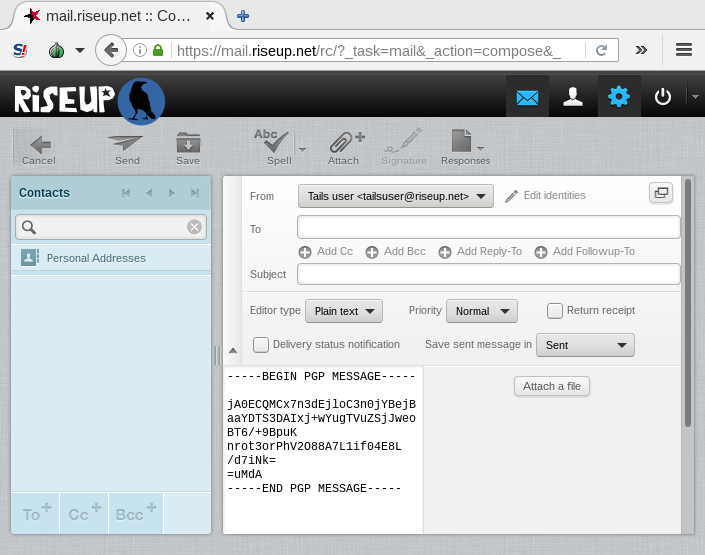

With OpenPGP Applet you can encrypt or sign text using the public key encryption of OpenPGP.
When using OpenPGP Applet to encrypt emails, non-ASCII characters (for example non-Latin characters or characters with accents) might not display correctly to the recipients of the email.
If you are going to encrypt emails often, we recommend you to set up Thunderbird instead.
Write your text in a text editor. Do not write it in the web browser!
Click on OpenPGP Applet and choose to open gedit.
Select the text that you want to encrypt or sign. To copy it into the clipboard, right-click (on Mac, click with two fingers) on the selected text and choose from the menu.
OpenPGP Applet now shows lines of text, meaning that the clipboard contains non-encrypted text:
Click on OpenPGP Applet and select from the menu.
If you receive the error message “The clipboard does not contain valid input data”, try to copy your text again, starting from step 2.
If you want to encrypt the text, select one or more public keys for the recipients of the encrypted text in the Choose keys dialog box. To select a public key, double-click on the corresponding line in the Select recipients list box.
If you want to sign the text, select the secret key with which you want to sign the text in the Sign message as drop-down list.
If you want to hide the recipients of the encrypted text, select the Hide recipients check box. Otherwise anyone who sees the encrypted text can know who the recipients are.
Click on the OK button.
If you receive the warning message Do you trust these keys, answer it accordingly.
If you selected one or several public keys to encrypt the text, OpenPGP Applet now shows a padlock, meaning that the clipboard contains encrypted text:
If you only selected a secret key to sign the text, OpenPGP Applet now shows a seal, meaning that the clipboard contains signed text:
To paste the encrypted or signed text into another application, right-click (on Mac, click with two fingers) in the application where you want to paste it and choose from the menu.
For example, you can paste it into the web browser to send it by email.
